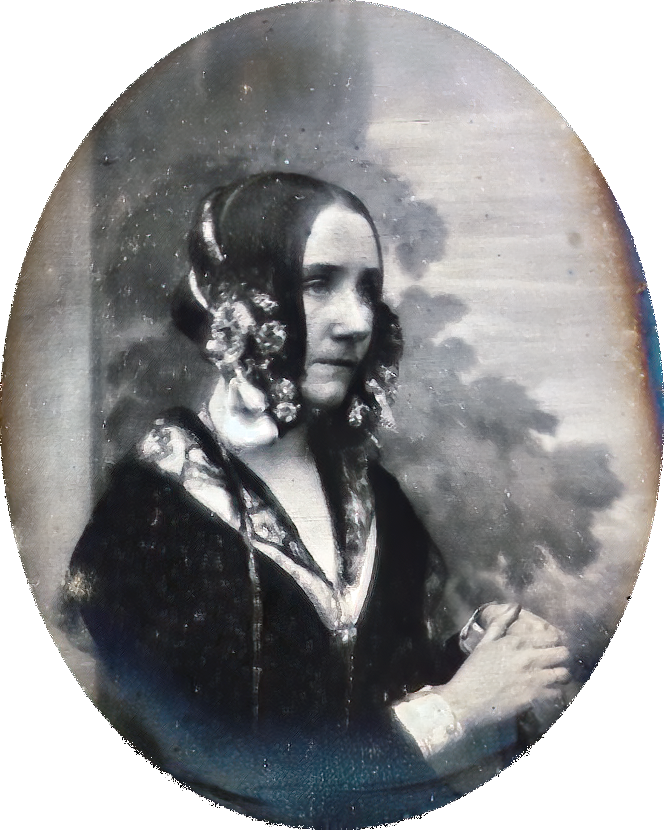

Ada Lovelace
Augusta Ada King, Countess of Lovelace (1815–1852), commonly known as Ada Lovelace, was an English mathematician and writer. She is best known for her work on Charles Babbage's early mechanical general-purpose computer, the Analytical Engine.
Ada Lovelace is often regarded as the world's first computer programmer, as she wrote the first algorithm intended for implementation on a machine. Her notes on the Analytical Engine include what is now considered to be the first algorithm intended for processing on a machine.
Lovelace's insights into the potential of computing went beyond Babbage's designs, envisioning a broader scope for computers in creating not only numbers but also music and art.
Click here to learn more about Ada Lovelace